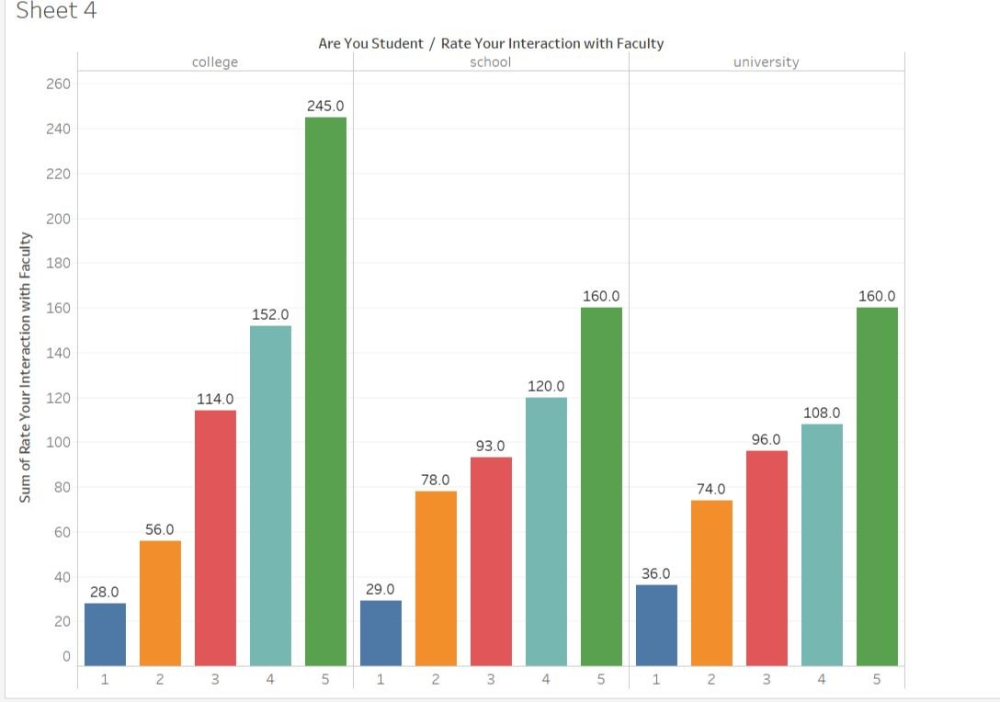

EFFECT OF COVID-19 ON EDUCATION SECTOR (STUDENTS) IN INDIA
Due to this Global pandemic, The Education Sector was also one of the sectors That Saw a Huge Impact, around The world more than One Billion Students From Schools to Universities have been impacted and The Mode of Education has Changed from Offline to Online.
I have worked with a team and we created a data set for the project, from scratch through a Google Form where we asked the students an array of questions like the issues faced during the online classes, the mode of attending online classes, and gave options in radio button as Mobile, Pc, Tablet. Then we preprocessed the collected data and removed the outliers and analyzed the data through tableau and identified the correlation between key attributes. Based on the analysis we concluded the students preferred Online Mode over Offline Mode. .